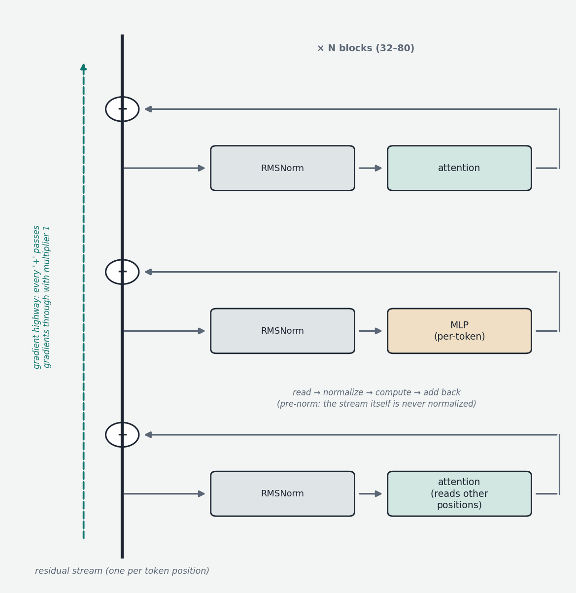

Chapters 00b–00d described the interesting computation — attention, MLPs, position. This chapter covers the connective tissue that makes it possible to stack that computation 32 to 80 times and have the result train and behave: residual connections and normalization. Neither does anything glamorous; both are scaffolding. But without them, deep transformers are untrainable, and the mental model they enable — the residual stream — is the single most useful frame for thinking about what happens inside a model.
The problem: gradients across depth
By the time dozens of blocks are stacked, training (Chapter 1) must propagate an error signal backward through every one of them. At each step backward, the signal is multiplied by matrices and passed through function derivatives. If those multiplications shrink the signal on average, after 64 layers it has vanished — early layers receive gradients near zero and never learn. If they grow it, it explodes. Vanishing and exploding gradients are what made very deep networks impractical for years.
Residual connections: add, don't replace
The fix came from computer vision — the 2015 ResNet paper (He et al.) — and is almost too simple to describe: instead of letting a layer's output replace its input, add it. If a layer computes function F on input x, its output is not F(x) but x + F(x). The layer learns the residual — what to add — rather than the whole new representation. If the right thing for some layer to do with some input is nothing, it can learn F(x) ≈ 0 and pass x through untouched, a genuinely useful baseline.

The deeper reason this works is what it does to gradients. Backward through x + F(x), the error signal splits: one path through F (where it may be scaled arbitrarily), one path through the addition (where it passes with multiplier exactly 1, untouched). However badly F's path behaves, some gradient always reaches the layer below, undamped. Stack 64 of these and the gradient at the bottom is a sum over many paths, including direct ones — depth stops being fatal.
In a transformer, residuals wrap every sub-layer — attention and MLP alike. The structure of a block is: read the running vector, compute attention, add the result back; read again, compute the MLP, add back. This justifies the residual stream picture used throughout this course and the interpretability literature: one vector per position flows vertically up the model like a stream; each sub-layer reads from it, computes an update, and writes the update back by addition. The stream is never overwritten, only accumulated into — so the original embedding, and every layer's contribution, survives to the top. By the final layer, each position's representation is the sum of the embedding plus 128 sub-layer contributions (64 attention + 64 MLP in an 64-block model). The model builds its representation by accumulation, not transformation — and Chapter 9's interpretability methods (features as directions, attribution graphs) are largely techniques for decomposing exactly this stream.
Normalization: keeping magnitudes sane
Residuals solve gradient flow but create a second issue: a stream that only ever accumulates can grow without bound, and individual dimensions can drift to wildly different scales. Sub-layers would then face inputs of unpredictable magnitude — destabilizing training and pushing computation out of numerically comfortable ranges. Normalization rescales vectors at strategic points so every sub-layer sees well-behaved input.
The transformer original is Layer Normalization (LayerNorm): take one token's vector, subtract the mean of its entries, divide by their standard deviation (now mean 0, spread 1), then apply a learned per-dimension scale and shift so the network can still produce whatever statistics it needs. The defining property — and the contrast with the older Batch Normalization — is that statistics are computed within a single token's vector, independent of other tokens and other examples, which is what sequence models need (tokens arrive one at a time at inference; batch composition must not change results).
Placement turned out to matter as much as the operation. The 2017 design applied normalization after each sub-layer's addition (post-norm), which proved unstable at depth as the growing stream interacted badly with the normalization. Modern models are almost universally pre-norm: normalize a copy of the stream on the way into each sub-layer, and add the sub-layer's output back into the raw, un-normalized stream. The stream stays a pristine additive accumulator; normalization becomes each sub-layer's private input conditioning. Pre-norm trains markedly more stably at depth and is one of the quiet reasons today's 80-layer models are routine.
Two modern refinements complete the picture. RMSNorm (Root Mean Square Normalization) simplifies LayerNorm — skip the mean subtraction and the learned shift, just divide by the root-mean-square of the entries and apply a learned scale. Empirically indistinguishable, computationally cheaper, and now the default across Llama, Qwen, DeepSeek, Mistral and peers. And several recent models (Qwen3, OLMo 2, Gemma's newer generations among them) add QK-norm: normalizing the query and key vectors inside attention, just before their dot product. The motivation is a specific instability — attention scores occasionally blowing up as Q and K magnitudes drift during training — and normalizing at the source caps it. It is a small change worth recognizing on architecture diagrams, and a good example of the genre this whole chapter represents: stability plumbing, invisible when it works.
The picture to keep
Residual connections turn every sub-layer's job from "produce a new representation" into "decide what to add," which gives gradients an undamped highway through arbitrary depth and gives the model a residual stream that accumulates contributions from embedding to output without ever erasing them. Normalization — RMSNorm, applied pre-norm, with QK-norm increasingly added inside attention — keeps the magnitudes flowing into each sub-layer predictable so the whole tower stays in its numerically and dynamically well-behaved regime. None of it is intelligence; all of it is the reason the intelligent parts can be stacked deep enough to matter.